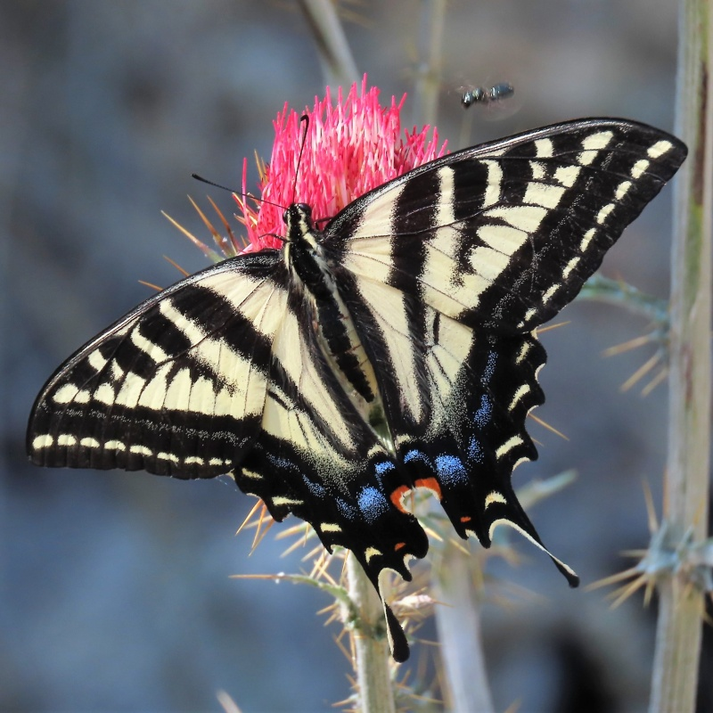

Papilio eurymedon
- Common name
- Pale Swallowtail
- Family
- Nymphalidae
- Family common name
- Brush-footed butterflies
- On the wing
- April to September, peak in May-June
One generation
- Habitat
- Open woodlands, broad-leaved scrub in hilly, open terrain, montane canyons and slopes, and shrubby/flowery spots.
- Larval host:
- Buckbrush, snowbrush ceanothus, bitter cherry, hardhack
- Nectar plants:
- Chokecherries, mints, sweet william, penstemons, toothwort, phlox and others.
- Abundance
- U-C
Range Map
Seasonality